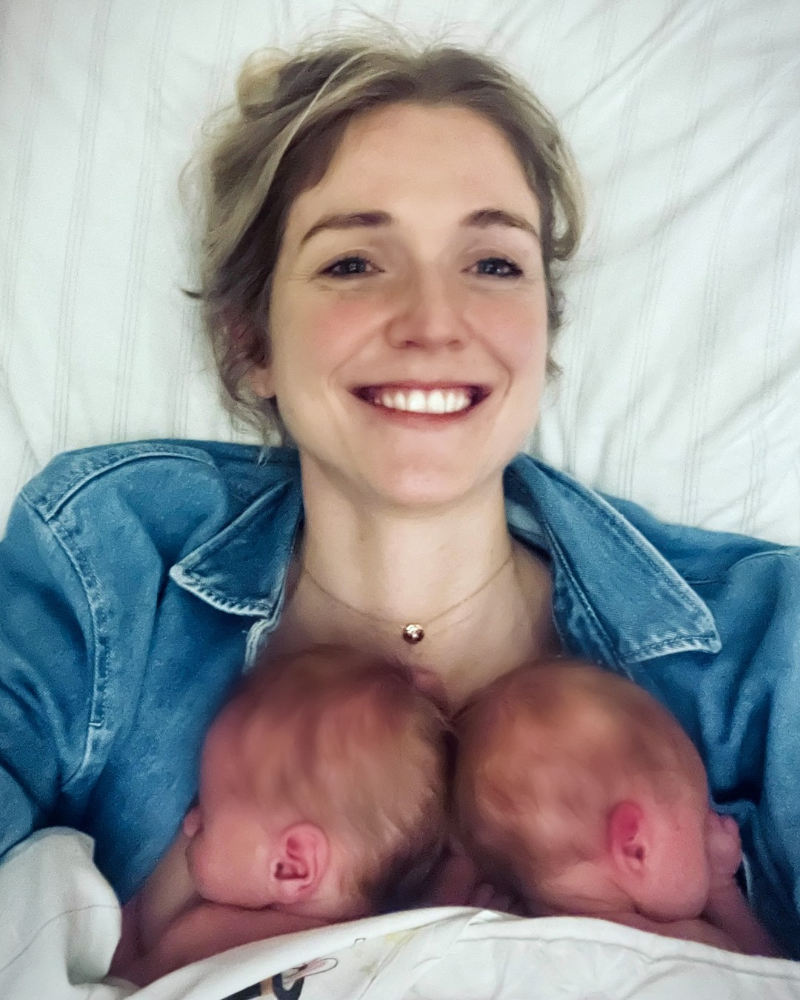

Warum es NourishMe gibt
Schwangerschafts- und Stillzeit-Ernährung ist ein Versorgungsthema — kein Diätthema.
Ab dem ersten Trimester war mir klar: ich versorge jetzt mehr als nur mich. Jeder Nährstoff geht erst an den Nachwuchs — über die Plazenta, später über die Milch. Ich muss selbst gut versorgt sein, damit das ganze System läuft.
Was es gab: Apps fürs Abnehmen. Apps für Schwangere, die am Tag der Geburt endeten. Apps für Stillende, die pauschal +500 kcal rechneten — egal ob ein Kind oder Zwillinge. Was es brauchte: eine App, die live mitrechnet, was wir gerade brauchen. Auf Basis von DGE, BfR, EFSA und LactMed.
— Vanessa, Mama von Leo und Carl